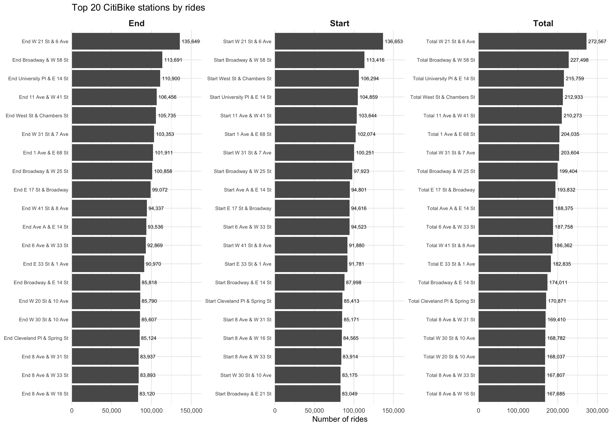

Spatial Patterns
Spatial Patterns Overview
This page examines spatial patterns in CitiBike usage across New York
City.
We explore ride intensity at start and end stations, identify the most
active hubs,
and visualize geographic clustering using maps and aggregated
summaries.
Data Import and Assembly
We begin by loading required packages and setting global plotting options.
library(tidyverse)
knitr::opts_chunk$set(
fig.width = 6,
fig.asp = .6,
out.width = "90%"
)
theme_set(theme_minimal() + theme(legend.position = "bottom"))
options(
ggplot2.continuous.colour = "viridis",
ggplot2.continuous.fill = "viridis"
)
scale_colour_discrete = scale_colour_viridis_d
scale_fill_discrete = scale_fill_viridis_dLoading the 2023 CitiBike Trip Dataset
All 2023 monthly trip files are read from the directory and combined into a single dataframe.
library(vroom)
citibike_df =
"2023-citibike-tripdata" |>
list.files(pattern = "\\.csv$", full.names = TRUE, recursive = TRUE) |>
sort() |>
vroom() |>
drop_na()The resulting dataset contains millions of observations and includes
station coordinates, trip times,
bike type, membership status, and start/end station identifiers.
Counting Rides at Start and End Stations
We aggregate station usage by computing:
- Number of rides starting at each station
- Number of rides ending at each station
- Total ridership per station (start + end)
# count rides per START station
start_counts =
citibike_df |>
filter(!is.na(start_lat), !is.na(start_lng)) |>
rename(station_name = start_station_name) |>
group_by(station_name, start_lat, start_lng) |>
summarize(n_rides = n(), .groups = "drop")
# count rides per END station
end_counts =
citibike_df |>
filter(!is.na(end_lat), !is.na(end_lng)) |>
rename(station_name = end_station_name) |>
group_by(station_name, end_lat, end_lng) |>
summarize(n_rides = n(), .groups = "drop")
# Total count rides per station
total_counts =
bind_rows(
start_counts |> select(station_name, n_rides),
end_counts |> select(station_name, n_rides)
) |>
group_by(station_name) |>
summarize(n_rides = sum(n_rides), .groups = "drop")Top 20 CitiBike Stations
A helper function generates bar plots of the top 20 busiest stations based on ride counts.
make_top20_plot = function(df, title) {
df |>
slice_max(n_rides, n = 20) |>
ggplot(aes(x =n_rides, y = reorder(station_name, n_rides))) +
geom_col() +
geom_text(
aes(label = scales::comma(n_rides)),
hjust = -0.1,
size = 2
) +
labs(
title = title,
x = "Number of rides",
y = NULL
) +
scale_x_continuous(
labels = scales::comma,
n.breaks = 10
) +
coord_cartesian(clip = "off") +
theme(axis.text.y = element_text(size = 7)
)
}This function will be reused for start, end, and total ridership rankings.
Constructing the Top-20 Dataset
We create a dataframe containing the top 20 busiest stations for:
- Start rides
- End rides
- Total rides
top20_all_stations =
bind_rows(
start_counts |>
slice_max(n_rides, n = 20) |>
mutate(type = "Start"),
end_counts |>
slice_max(n_rides, n = 20) |>
mutate(type = "End"),
total_counts |>
slice_max(n_rides, n = 20) |>
mutate(type = "Total")
) |>
group_by(type) |>
arrange(n_rides) |>
mutate(
station_ordered = factor(paste(type, station_name),
levels = paste(type, station_name)
)
) |>
ungroup()Visualization: Top 20 CitiBike Stations
We compare start, end, and total ride counts using faceted bar charts.
p_top20 =
ggplot(
top20_all_stations,
aes(
x = n_rides,
y = station_ordered,
text = paste0(
"Station: ", station_name, "<br>",
"Rides: ", scales::comma(n_rides), "<br>",
"Type: ", type
)
)
) +
geom_col() +
geom_text(
aes(label = scales::comma(n_rides)),
hjust = -0.1,
size = 2.5
) +
facet_wrap(~ type, scales = "free") +
scale_x_continuous(
labels = scales::comma,
n.breaks = 4,
expand = expansion(mult = c(0, 0.2))
) +
coord_cartesian(clip = "off") +
labs(
title = "Top 20 CitiBike stations by rides",
x = "Number of rides",
y = NULL
) +
theme_minimal() +
theme(
axis.text.y = element_text(size = 7),
strip.text = element_text(size = 12, face = "bold"),
)
p_top20
Interactive Map: Start Stations
We visualize ride intensity at start stations using a color-graded leaflet map.
library(leaflet)
pal_start = colorNumeric(
palette = "viridis",
domain = start_counts$n_rides
)
start_map =
start_counts |>
leaflet() |>
addProviderTiles(providers$CartoDB.Positron) |>
addCircleMarkers(
lng = ~start_lng,
lat = ~start_lat,
color = ~pal_start(n_rides),
radius = 2,
label = ~paste0(
station_name, ", ",
"Rides: ", n_rides
),
popup = ~paste0(
"<b>", station_name, "</b><br>",
"Number of rides: ", n_rides
)
) |>
addLegend(
position = "bottomright",
pal = pal_start,
values = ~n_rides,
title = "Number of rides",
opacity = 1
)
start_mapInteractive Map: End Stations
A second map displays intensity at end stations.
library(leaflet)
pal_end = colorNumeric(
palette = "viridis",
domain = end_counts$n_rides
)
end_map =
end_counts |>
leaflet() |>
addProviderTiles(providers$CartoDB.Positron) |>
addCircleMarkers(
lng = ~end_lng,
lat = ~end_lat,
color = ~pal_end(n_rides),
radius = 2,
label = ~paste0(
station_name, ", ",
"Rides: ", n_rides
),
popup = ~paste0(
"<b>", station_name, "</b><br>",
"Number of rides: ", n_rides
)
) |>
addLegend(
position = "bottomright",
pal = pal_end,
values = ~n_rides,
title = "Number of rides",
opacity = 1
)
end_map